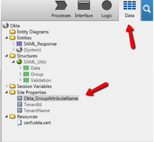
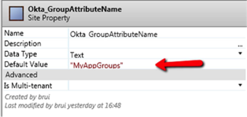

How to Configure SAML 2.0 for OutSystems
This setup might fail without parameter values that are customized for your organization. Please use the Okta Administrator Dashboard to add an application and view the values that are specific for your organization.
- Log into your OutSystems account with your administrator credentials.
Set up the Okta Module
Note that the default configurations do not work.
- Open your Okta module (eSpace) in Service Studio.
- Select the Data tab, then locate Site Properties > Okta_GroupAttributeName.

- For Okta_GroupAttributeName > Default Value, enter the value you typed in the Group Name in the configuration form.

- Download following certificate:
Sign in to the Okta Admin app to have this variable generated for you
- Then either:
- Right-click on the Resources folder (in Service Studio), and upload the Okta certificate you just downloaded
- If there is a certificate already present in Resources, right-click on that certificate and select Change Resource, then upload the new certificate.
Note that you only need to do this step once.
Setup the Application Module (OutSystems)
Note that the default configurations do not work.